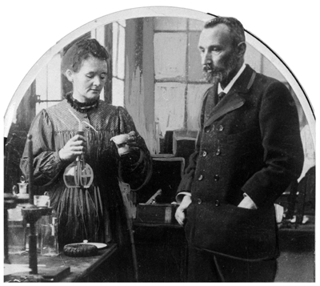
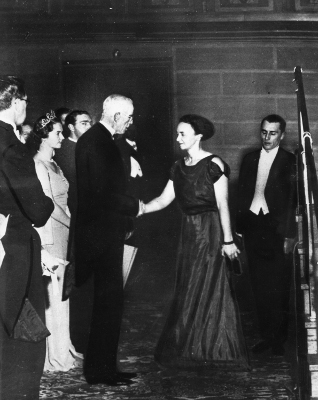

“Bilimin kendi içinde inanılmaz bir güzelliği olduğuna inanıyorum. Laboratuardaki bilim adamı, sadece bir teknisyen değil, aynı zamanda, doğanın sırları karşısında, peri masallarını büyük bir hayranlık ve şaşkınlıkla dinleyen bir çocuk gibidir.”
Marie Curie
Hayatı boyunca pek çok rol üstlendi; değişik yer ve zamanlara göre bazen anne, bazen eş, bazen fizik araştırmacısı, üniversite öğrencisi, Polonya milliyetçisi, enstitü idarecisi, bağış toplayıcı, röntgen (x-ray) uzmanı, danışman ve bazen de öğretmen oldu. Ancak uğruna hayatını feda ettiği fizik araştırmalarını gerçekleştirmemiş olsaydı, bugün radyoaktivite konusunda çok az şey biliyor olacaktık veya radyoloji bilimi ondan yıllar sonra keşfedilecekti. Polonya asıllı Marie Curie, 1937 yılında aşırı radyasyona maruz kalmaktan dolayı yakalandığı kan kanserinden hayatını kaybettiğinde, geride iki Nobel Ödülü bırakmış ve radyoloji biliminin kurucusu olarak dünyayı değiştiren kadınlar arasına adını yazdırmıştı.
Uranyumla yaptığı deneyler sonucu radyoaktiviteyi keşfederek Radyoloji biliminin kurucusu olan, toryumun radyoaktif özelliğini bulan, radyum elementini ayrıştıran Madam Curie, 1903 Nobel Fizik ve 1911 Nobel Kimya Ödülü’nü aldı. Ayrıca Curie, Nobel Ödülü’nü alan ilk kadın, iki kere alan ilk bilim insanı olarak da tarihe imzasını attı. Gelin, bu fizik kahramanının hayatının bilinmeyen dehlizlerinde turlayalım.
Adam olacak çocuk babasından...
Daha çok ‘Madam Curie’ olarak da bilinen Marie Curie, 7 Kasım 1867’de Polonya’nın Varşova kentinde, fertlerinin büyük kısmı öğretmen olan bir ailede dünyaya geldi. Öğretmen olan babası Wladyslaw Sklodowski, aynı anda birkaç okulda birden idarecilik yapıyordu. Kendi çocuklarıyla birlikte Varşova Üniversitesi’nde biyoloji okuyan babası, doğduğunda adı Maria Sklodowski olan Marie’nin de aralarında bulunduğu çocukları tarafından ‘yürüyen ansiklopedi’ olarak isimlendiriliyordu. Madam Curie’nin büyükbabası Jozef Sklodowski de ‘yüksek Cumhuriyetçi’ düşüncelere sahip bir okul idarecisi ve öğretmendi. Fakir aile çocuklarını soylu ailelerin çocuklarıyla aynı sınıfta okumaya teşvik ederek kariyerini bitirme noktasına getirmişti. Annesi Bronislawa’ysa çocukları üzerinde, özellikle de Marie ve Manya üzerinde çok büyük bir etkiye sahipti. Ailenin diğer büyükleri gibi kendini eğitime adamıştı. Varşova’nın en büyük kız okullarından birinin müdireliğini yapıyordu.
Aile, uzun süre Varşova’nın Freta Sokağı’nda bulunan bir apartmanda yaşadı. Marie de bu apartmanda beş çocuğun en küçüğü olarak dünyaya geldi. Annesi, okuldan eve, evden okula eğitimcilik, ev hanımlığı ve annelik arasında mekik dokuyor, bazen bekâr bir kadın olarak kalmış olmayı istiyor, ancak çocuklarını en iyi şekilde yetiştirmeyi de ihmal etmiyordu. Marie, işçi sınıfına yukarıdan bakmamayı sıkı bir Cumhuriyetçi olan annesinden öğreniyordu.
Ailenin hayatı, 1871 yılından itibaren, baba Sklodowski’nin kardeşinin onlarla yaşamaya başlamasıyla değişecekti. Ailenin sonradan fark edeceği üzere amca, ‘çağın vebası’ olarak bilinen tüberküloza yakalanmıştı. O dönemde tüberküloz, keskin bir orak gibi, zengin-fakir demeden önüne çıkan herkesi biçiyordu. Marie’nin annesi de bu dönemde ya bir öğrencisinden ya da eşinin kardeşinden tüberküloz mikrobu kaptı. Anneleri artık evde ayrı bir odada yaşamaya başlamıştı. Marie’nin hayatındaki ilk felaket bu olmuştu, ama sonuncusu olmayacaktı.
Tedavi çabaları sonuç vermedi ve henüz 11 yaşındaki Madam Curie, 1878’de annesini kaybetti. Bu kayıp onu derinden sarsmıştı. Bir süre, kardeşleriyle annesini tedavi edebilecek bir doktoru hayal ettikleri oyunlar oynadı. Bilimin ve tıbbın insani amaçlarla kullanılması gerektiği şeklindeki düşüncesi çocuk zihninde şekillenmeye başlamıştı bile.
Madam Curie’nin hayatını şekillendiren bir başka önemli olaysa Polonya direniş hareketiydi. 1790’lı yıllarda Polonya; Rusya, Beyaz Rusya ve Avusturya’nın işgali altında, bu üç devlet tarafından paylaşılmış durumdaydı. Madam Curie’nin yaşadığı Varşova, Rusya’nın elindeydi. Curie doğmadan 3 yıl önce Ruslara karşı bir ayaklanma olmuş ve Curie’nin dedesi de bu direnişte aktif rol almıştı. Ancak direniş başarısızlıkla sonuçlanmış ve aralarında Curie’nin ailesinin de bulunduğu Polonya’nın bazı zengin ve soylu aileleri varlıklarını yitirmişti. Yönetim Rusların elindeydi ve devlet okullarını da Ruslar kontrol ediyordu. Direnişin başarısız olmasının ardından birçok entelektüel ve bilim adamı Paris gibi Avrupa şehirlerine kaçmıştı. Marie’nin babası silahlı direnişte aktif olarak yer almak yerine pasif direnişi seçmişti. Bugün ‘Polonya pozitivizmi’ olarak bilinen eğitimin, direnişin en önemli araçlarından biri olduğuna inanıyordu. Bu düşünce taraftarlarına göre eğitim, dünyayı daha yaşanılır bir yer haline getirecek en önemli araçtı. Marie’nin ailesi eğitime önem veriyor; her ne kadar okullar Rusların denetiminde olsa da Polonyalı öğretmenler, bir yolunu bulup öğrencilere Polonya dilini ve tarihini öğretiyorlardı.
Marie’nin ilk gittiği okulda da diğerlerinde olduğu gibi ‘iki müfredat’ vardı. Biri Rusların kontrolündeki, diğeriyse müfettişler veya denetçiler olmadığında öğretmenlerin izlediği müfredat. Ancak bu durum küçük Marie’yi bunaltmış ve öğrenimini kötü etkilemişti. Bunun üzerine babası onu 10 yaşındayken tamamen Rusların kontrolündeki bir okula verdi.
Ancak bu okullardan mezun olanların, Varşova’da iş bulma şansları pek yoktu ve kadınların eğitimi sınırlıydı. Sözgelimi kadınların üniversiteye gitmesi yasaktı. Marie’yse annesinin izinden giderek bir kız okulunda öğretmen olmak istiyordu. Hem ablası Bronia hem de Marie, eğitimlerini Polonya dışında sürdürmek yanlısıydı; ancak ailenin maddi durumu bunu kaldıracak gibi değildi. Lakin ikisi de vazgeçmedi ve bir çözüm yolu bulundu.
Abla kardeş çalışıp, birbirlerini okuttular
Bronia, Paris’te tıp öğrenimi görecek, Marie ise çalışarak ablasına maddi destek sağlayacaktı. Bronia da mezun olduktan sonra, ileride Sorbonne’da okuyacak olan Marie’ye yardımcı olacaktı. Marie’nin, ablası gibi tıp eğitimi görmek yerine fizik ve matematik öğrenimini tercih etmesi de bu dönemde olmuştu. Jadwiga Szczasinska-Dawidowa tarafından 1882 yılında Polonya’da ‘Uçan Üniversite/Flying University’ adlı bir organizasyon kurulmuştu. Bu, üniversite seviyesinde eğitim almak isteyen kadınların gittiği gizli bir akademiydi. Marie de bu akademide fizik ve matematik derslerine katılmış, deneyler yapmıştı.
Yirmi dört yaşındayken iki günlük bir tren yolculuğunun ardından 1891 yılında Paris’e, ablasının yanına gitti. Bir süre ablasına yardım ettikten sonra Uçan Üniversite’de aldığı eğitimi sürdürmek üzere Sorbonne Fen Bilimleri Akademisi sınavlarına girdi. Sınava giren 1825 kişi arasından sıyrılmayı başaran 23 kadından biri olmuştu. Amacı, eğitimini tamamlamak ve fizik öğretmeni olmaktı.
Birkaç yıl sonra abla Bronia evlendi. Hep birlikte üniversiteye bir saat uzaklıkta bir apartmanda yaşamaya başladılar. Ancak hem siyasi hem de mesleki konumlarından dolayı evin çok geleni gideni olduğu için, Marie bu kalabalık ortamda eğitimini sürdüremeyeceğini anladı. Paris’in Latin Mahallesi’nde bir apartmana taşındı. Her ne kadar o dönemde bu tür yerlerde yaşayanlar Paris sosyetesi tarafından ayak takımı olarak görülse de bu, Marie’yi rahatsız etmedi. Günün büyük kısmını okulda laboratuarlarda geçiriyordu ve hayatından memnundu. Onun aklını meşgul eden tek şey, bilimdi. Lüks ve sınıfsal şatafatlar değil...
İki yıllık eğitimin ardından sınıf birincilikleriyle birlikte, fizik ve matematik dallarında yüksek lisans dereceleri alarak mezun oldu. Şimdiki hedefi öğretmenlik diploması alıp Varşova’ya dönmekti.

Bay ve Bayan Curie, tüm ömürlerini feda edecek kadar bilim âşığı idiler.
Yaşamı değiştiren bir evlilik
Aynı yıl bir arkadaşının evinde 35 yaşındaki Pierre Curie ile tanıştı. “Piezo elektrik”i keşfeden bilim adamı Pierre, aynı zamanda Endüstriyel Fizik ve Kimya Okulu Laboratuarı’nın Başkanıydı. Pierre, bir süre görüştükten sonra Marie’ye evlenme teklifinde bulundu. Ancak Marie, evliliğe sıcak bakmıyor ve evliliklerinin önünde bazı engeller olduğunu düşünüyordu. Onun için bilim, bir eşten önce geliyordu. Her ikisi de kendilerini işlerine adadıkları için, Pierre’e yan yana apartmanlarda yaşamayı teklif etti. Pierre bunu kabul etmedi. Bir diğer engelse Pierre’in Polonyalı olmamasıydı. Marie, eğer onunla evlenirse bir gün Polonya’ya dönme hayalinden vazgeçmek zorunda kalacaktı. Bunun üzerine Pierre’e kendisiyle birlikte Polonya’da yaşamayı teklif etti. Sonunda çift, 26 Temmuz 1895’te evlendi. Maria Sklodowska, Marie Curie olmuştu...
Evliliğin ardından iki bilim âşığının radyoaktif elementler üzerine beraber çalışmalarda bulunduğu 14 yıl, Marie Curie için en verimli dönem olacaktı. İlk kızı Irene dünyaya gelince çalışmalarına bir süre ara verse de durmaya niyeti yoktu. Öğretmenlik diplomasını aldıktan sonra kocasının ayarladığı bir laboratuarda, daha önce ünlü bilim adamlarından Henri Becquerel tarafından duyurulan; uranyum tuzlarının yaydığı ve sonraları radyoaktivite olarak adlandırılacak ışın üzerine detaylı araştırmalara başladı. Kocası, sanki tez danışmanıymış gibi kendisine yardım ediyordu.
Marie, uranyum elementinde radyoaktif maddeler bulunduğunu düşünüyordu. Bu maddenin sırlarını çözmeyi kafasına koymuştu. Bu dönemde radyoaktivite üzerine birçok makalesi yayınlandı. 1898 başlarında çalışmalarına hız vermiş, toryumun radyoaktif ışınlar yaydığını fark etmişti. Bu noktada eşi Pierre de kendi çalışmalarını bırakarak Marie’ye yardım etmeye başladı. Tıpkı büyük balık yakalayan bir balıkçıya, diğerlerinin yardım etmesi gibi. Bazı eleştirmenler, bu düşünceleri bulan ve araştırmaları yapan asıl kişinin Pierre olduğunu savunurlar. Gerekçeleri de Pierre öldükten sonra Marie’nin bu konuda hiç makale yayınlamamasıdır.
Marie, nihayet yakaladığı balığı pişirip, servis etmeye karar vermişti. Araştırmalarının sonunda radyoaktivitenin atomla ilgili bir kavram olduğu ve minerallerin moleküler yapısından kaynaklanmadığı tezini ortaya attı. 1900’lü yıllarda birçok bilim adamı atom diye bir şeyin varlığına inanmıyordu. Bu iddiası birçoklarını güldürmüştü: “Neler diyordu bu kadın böyle kuzum?”
Bu arada aynı alanda çalışmalar yapmakta olan Becquerel de boş durmamış, iki farklı uranyum mineralinin daha aktif olduğunu keşfetmişti. Temmuz 1898’de Curieler yeni bir radyoaktif element olan ve uranyumun radyoaktif bozunmasından ortaya çıkan polonyumu bulduklarını duyurdular. Eylül 1898’de Fransız kimyacı Eugene Demarcay’ın spektroskopi yöntemi ile tanımlanmasına yardım ettiği, doğal radyoaktif element olan radyumunu bulduklarını açıkladılar. Marie, 1903 yılında doktorasını vererek Fransa’da gelişmiş bilim alanında doktora unvanı alan ilk kadın oldu. Aynı yıl kocası ve Becquerel ile paylaştığı Nobel Fizik Ödülü’nü de alarak, Nobel Ödülü sahibi ilk kadın olarak tarihe geçti.
Radyumun Tehlikeli Güzelliği
1904 yılında eşi Pierre Sorbonne’da, Marie de Sevr’deki bir kız okulunda öğretmenliğe başladı. Aynı yılın sonlarına doğru ikinci kızları Eve doğdu. O sıralar Marie ve Pierre, radyasyondan kaynaklanan rahatsızlıklar geçirmeye başlamıştı. Hamama giren terlemek üzereydi...
Curielerin Nobel Ödülü’nü almasının ardından medya, yeni bulunan radyum elementini ‘mucize ilaç’ olarak lanse etti. Ancak araştırmaları sırasında radyoaktivitenin etkisinden dolayı hem Curieler hem de Becquerel, birçok rahatsızlık geçirmişti. Gözle görülür bir hastalığı olmamasına rağmen Curie, çalışmaları sırasında 8 kilo vermişti. Hatta ilk çocukları Irene’den sonra bir kez daha hamile kalan Curie, hamileliğinin beşinci ayında büyük ihtimalle radyasyonun etkisinden dolayı düşük yapmıştı. Curie’nin ve dünyanın bilmediği şey, radyum ve diğer radyoaktif elementlerin güçlü ve görünmez gama ışını yayıyor olmasıydı. Gama ışınları, hem insan hem de hayvan vücudu için yıkıcı bir etkiye sahipti.
Radyasyon Curieleri öylesine etkilemişti ki Nobel aldıklarında ne Madam Curie’nin ne de eşinin ödülü almaya gidecek gücü vardı. Doktorları kendilerini muayene ediyor, ancak bir teşhis koyamıyorlardı. Bugün aşırı radyasyona maruz kalmanın yan etkileri bilinse de o dönemde radyum maddesinin insan dokusuna zarar verdiği yeni yeni kabul ediliyordu. Araştırmacılar, radyumun hastalıklı dokulara uygulanarak tedavide kullanılabileceği fikri üzerine yeni çalışmalar yapıyorlardı. Amerikalı mucit Alexander Graham Bell de kanserin tedavisi için tümöre radyum verilmesini öneriyordu.
19 Nisan 1906’da Pierre bir at arabasının çarpması sonucu ölünce Marie, iki çocuğu ile dul kaldı. Ancak Sorbonne Üniversitesi, kocasının yerine fizik profesörü olarak Marie’yi atadı ve Madam Curie 1908’de Sorbonne’da görev yapan ilk kadın profesör olarak, bir ilke daha imza attı.
Bilimsel kariyeri gölgeleyen aşk
Her ne kadar elindeki bilim feneriyle atomların karanlık odalarını aydınlatmaya kendini adamış olsa da sonuçta Marie de bir kadındı. Kalbi olan bir kadın... 1910 yılının yazında, aynı zamanda kocasının da bir öğrencisi olan Paul Langevin ile yaşadığı gönül ilişkisi, kariyerinin ve toplum içindeki itibarının gerilemesine yol açacaktı. Tümü erkeklerden oluşan Fransız Bilim Akademisi, Marie’nin üyeliğine taş koyduğu gibi, ‘bilim âşığı’ kadın, yaşadığı gerçek bir ‘aşktan’ dolayı eleştiri bombardımanına maruz kalmıştı. Mutsuz bir evliliği olan Paul Langevin ile Marie arasındaki bu ilişki, gazetelere Langevin Skandalı olarak yansıdı ve Marie’nin ikinci Nobel Ödülü’ne gölge düşürdü.

Madam Curie, İsveç Kralı Gustav ile birlikte, ikinci defa Nobel alırken...
Bu dönemde Paul, Marie’ye birçok mektup yazdı, ancak bu mektupların büyük kısmı Paul’un eşi Jeanne’in eline geçti. Jeanne’in kardeşi Paris’te yayınlanan bir gazetenin editörüydü. Öfkeli kadının ailesi, Paul ve Marie’yi mektupları yayınlamakla tehdit etti. Ve dediklerini de yaptılar. Skandalın patlak vermesiyle birlikte, Marie’nin ülkeyi terk etmesini istemeye varacak kadar şiddetli bir propaganda başladı. Âşığı Langevin, gazetenin editörünü halkın önünde yapılacak bir düelloya davet etti; ancak her ikisinin de silahını çekememesi, konunun kapanmasını sağlayacaktı.
Bilim dünyası bu skandaldan fazla etkilenmedi. Curie ile Poincare 1911’de Solvay Konferansı sırasında radyum ve polonyumun keşfi ve araştırılmasındaki rollerinden ötürü Nobel Kimya Ödülü’ne layık görüldüler. Böylece Marie, iki Nobel Ödülü alan ilk isim olarak, ‘ilkler’ listesine bir çentik daha atmış oldu. Yaptığı çalışma, bir elementin radyoaktif işlemlerden sonra başka bir elemente dönüşebileceğini gösteriyordu. Bu, kimya alanında yepyeni bir sayfanın açılması demekti.
Madam Curie, Aralık 1911’de Nobel Ödülü’nü almak için gittiği Stockholm’de yaptığı konuşmada çalışmaların eşine ait olduğu yönündeki iddialara cevap verdi. Eşinin yardımlarını küçümsemediğini; ancak radyoaktivitenin atomun bir özelliği olduğu hipotezinin tamamen kendi çalışması olduğunu söyleyerek eleştirileri susturdu.
Bundan sonraki yaşamına kocasının ölümünün ardından geçirdiği sarsıntılı dönemden dolayı yaşadığı depresyon damgasını vursa da Madam Curie, 1914 yılında Paris Üniversitesi’nde kurulan Radyum Enstitüsü’nün ilk müdürü oldu. Hayatı boyunca radyumun tıptaki önemine dikkat çekti. Birinci Dünya Savaşı sırasında kızı Irene ile birlikte, genç hemşire adaylarına X ışını teknolojisini öğretti ve fizik tedavi uzmanlarına savaş ortamında radyoloji ekipmanını nasıl kullanacaklarını gösterdi. Ancak bu sırada ikisi de yüksek dozda radyoaktif ışına maruz kalmış, alarm zilleri onlar için çalmaya başlamıştı.
Ölümü ‘aşkının’ elinden oldu
Ömrü boyunca bilime katkısını sürdüren Marie, Varşova’daki Radyum Enstitüsü’nün kurulmasında da önemli rol oynamıştı. O dönemde Amerikan Başkanı Herber Hoover’ın kendisine verdiği 50 bin dolar ödülle yeni kurulan laboratuara radyum satın alacak kadar bu işe sevdalıydı. Lakin ilk aşkı olan bilimin ona hazırladığı tatsız sürpriz, kapısını çalmakta gecikmedi. 1934 yılında Fransa’nın Savoy kentinde, aşırı radyasyona maruz kalmaktan dolayı yakalandığı kan kanseri sonucu öldü. Ne hazindir ki, kendisine iki Nobel Ödülü getiren ve bilim dünyasında çığır açmasını sağlayan çalışmaları, gün gelip ölümüne sebep olmuştu. Bu yüzden kendisine ‘bilim için ölen kadın’ denilirken, radyoaktivite birimine de ‘curie’ adı verilecekti.
Kızı Irene de bu yoldaki çalışmalarını sürdürerek annesinin izinden gitti. Bir fizikçi olan kocası Frederick Joliot ile beraber yürüttüğü çalışmalarda yapay radyoaktiviteyi keşfetti. Eşiyle birlikte yaptıkları keşiflerden dolayı 1935 yılında Nobel Ödülü’ne layık görüldüler.
Marie Curie, yaşadığı 67 yıl boyunca genç bir kızdan anneliğe, bir fen öğrencisinden fizik profesörüne, idealist bir çocuktan dünyanın en ünlü bilim kadını olmaya kadar pek çok rol üstlendi. Curie, 1995’te nihai yerini buldu. Külleri, Fransa’nın hem erkek hem de kadın kahramanlarının anıtının bulunduğu Pantheon’a gömüldü. Hatırasıysa tıpkı ömrünü adadığı radyoaktif maddeler gibi ışımaya devam ediyor...
NOTLAR